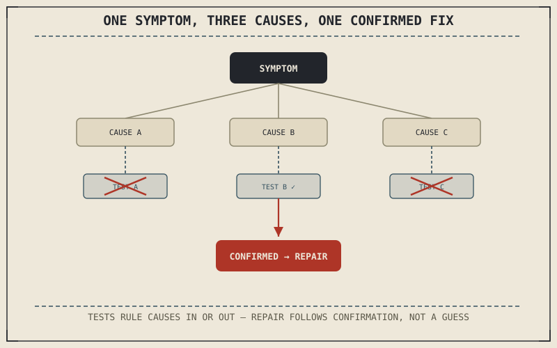

A symptom and its cause are rarely the same thing, and the gap between them is where most bad repairs happen — parts replaced that were never actually faulty, based on a guess rather than a verified cause. Part X built a maintenance system around keeping a motorcycle in good condition; this part is about what happens once something goes wrong anyway, and the actual method for finding out why before reaching for a wrench.
Chapter 10.10 closed Part X with a promise that this book would turn next to diagnosis and repair. This chapter opens Part XI with the method itself, before the system-specific chapters that follow apply it.
Symptom and Cause Are Different Things
A symptom is what a rider actually notices — a rough idle, a spongy brake lever, a pull to one side under braking. A cause is the specific, underlying condition producing that symptom, and the same symptom can often trace back to genuinely different causes. Chapter 10.6 already demonstrated this directly: a spongy brake lever can mean air in the hydraulic line, degraded fluid that's absorbed moisture, or worn pads requiring more piston travel — three different causes producing what feels, from the lever, like the same symptom. Diagnosis is the discipline of not stopping at the symptom.
Building a List of Possible Causes, Then Narrowing It
Good diagnosis starts by listing every plausible cause for a given symptom, drawing on exactly the kind of connected-systems understanding Chapter 10.1 argued for, then narrowing that list through targeted tests rather than guessing which single cause is most likely and replacing that part first. A test should be chosen specifically because it can rule causes in or out — checking brake fluid clarity and level rules out or confirms degraded fluid without touching the pads or bleeding the line, for instance — rather than performed as a generic first step regardless of what it can actually distinguish.
The same symptom can come from genuinely different causes, and a good diagnosis narrows that list through targeted tests chosen specifically because they can rule causes in or out — not by guessing which single cause seems most likely and replacing that part first.

A flowchart showing one symptom branching into three possible causes, each connected to a specific test that can confirm or rule it out, converging on a single confirmed cause before repair begins.
Confirming Before Repairing
The step most often skipped under time pressure is confirmation: verifying a suspected cause is actually present before performing the repair, rather than replacing a part based on strong suspicion alone. This matters because an unconfirmed repair can produce a false positive — the symptom happens to improve or coincidentally resolve on its own, and the actual cause remains unaddressed, ready to produce the same symptom again later, now with the added cost and effort of an unnecessary repair already spent.
A Common Misconception, Cleared Up Early
It's a common instinct to reach for the most commonly replaced part associated with a given symptom, treating experience with similar-sounding problems as a reliable shortcut past actual diagnosis. Chapter 10.1's connected-systems argument applies directly here: the specific motorcycle, its actual maintenance history, and its specific riding conditions all shape which cause is actually most likely in this particular case, and a generic "usually it's this" heuristic can lead directly to the unconfirmed, wrong-part-replaced outcome the previous section described.
Where This Leads
This method applies the same way across every system this book has covered. Chapter 11.2 begins applying it directly, starting with engine performance problems — rough running, power loss, and stalling.
Key Concepts to Remember
- A single symptom can trace back to genuinely different underlying causes, and diagnosis means not stopping at the symptom itself.
- Tests should be chosen specifically because they can rule causes in or out, narrowing a list of plausible causes rather than guessing which one is most likely.
- Confirming a suspected cause before repairing it avoids the false-positive outcome where an unrelated fix coincides with a symptom improving while the real cause goes unaddressed.
Cross-References
| ← Ch. 10.6 | Described three different causes behind a spongy brake lever symptom; this chapter uses that example directly to illustrate symptom-versus-cause diagnosis. |
| ← Ch. 10.1 | Established maintenance items as a connected system; this chapter shows that same connected understanding shaping which cause is actually most likely for a given motorcycle. |
| → Ch. 11.2 | Applies this diagnostic method directly to engine performance problems — rough running, power loss, and stalling. |